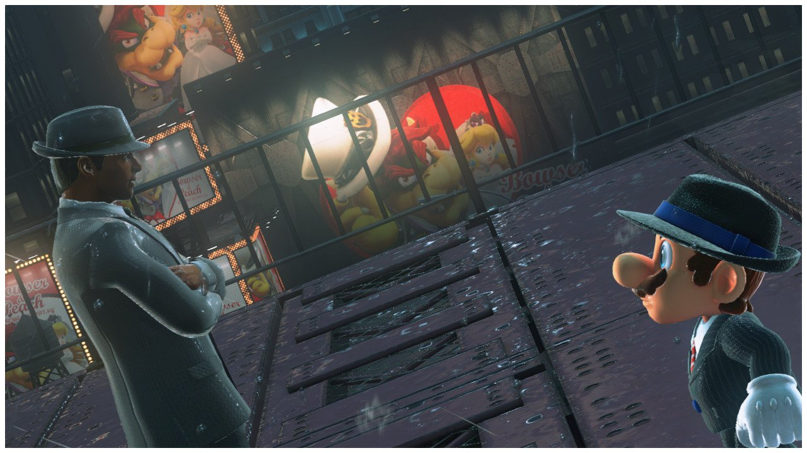
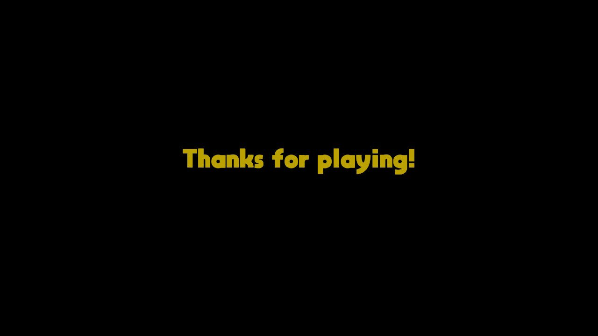

Review: Super Mario Odyssey
November 18, 2017
It’s hard to say much more about Super Mario Odyssey than has already been said. A game of it's cultural significance comes seldom and ink is liberally spilled. In that light I’ll keep it short and focus on extra perspective I can bring to the table.
I very much enjoyed this game. In many ways it is the truest spiritual successor to Super Mario 64, a game which defined my childhood. It inherits the sense of exploration and joy in traversal more clearly than any other successor. The art is gorgeous, and I’m continually surprised at the visuals that handheld hardware can achieve on my 48” 1080p TV at a buttery smooth 60fps. The musical score is stellar and the real orchestral recordings continue to do the compositions justice. The controls are tight and responsive.

With the praise out of the way, a digression. It is sometimes posited in the gamer community that Nintendo games are reviewed on a curve — that you could subtract 10-20 points from any 100 point score and know the true quality of the game. I vociferously disagree with this notion. I truly believe Breath of the Wild with all of it's faults is one of the best games ever made, and deserves every last perfect score and award nomination. To discount all games from a publisher or developer as overrated is narrow of focus and I dare say intellectually lazy.
But Odyssey banks on it’s place in the Mario pantheon and the inherit franchise nostalgia so very frequently. Levels are chock full of things to find, but can often feel like a Banjo Kazooie magnitude collectathon. The possession mechanic works well most of the time, but is usually relegated to a quick 30 second portion of a kingdom and then forgotten. Retro 2D platforming sections are novel but lack any interesting level design in their own right. In my view, all of these faults are just aspects of the game trying to do too much. With more focus, I think it could be more enjoyable.
The nostalgia spell totally worked on me. The music, the visuals, the call backs; they all truly felt like a grand celebration and I was on board. However, I do think opinions of the game are inflated. Perhaps Odyssey is the game that internet trolls have in mind when they talk about the Nintendo review score curve.
This is not a perfect game. It is, however, a must play game. It doesn’t compare to the likes of Super Mario Galaxy or Super Mario 64 in my mind, but it is more than worth the price of admission. It stands out on the growing list of great reasons to purchase a switch, and rounds out what has been a great year for the Nintendo gamer.
